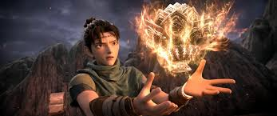
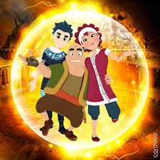

Hikaye Sayfama Hoşgeldiniz
Hikayeler, yaşamın gizli anahtarlarıdır. Onlar, hayal gücünün derinliklerinden gelir ve bizi bilinmeyen dünyalara götürür. Bu web sitesinde, geçmişin sırlarından karanlık ormanların gizemine, zamanın ötesine uzanan maceralara kadar pek çok hikaye bulacaksınız. Her sayfa sizi yeni bir yolculuğa davet ediyor. Hazır mısınız?”
Kayıp Şehir

Yıllardır unutulmuş olan bu kadim şehir, haritalardan silinmişti. Ancak arkeolog Elif, derin ormanların içinde kaybolmuş bir tapınağın izlerini buldu. Tapınağın kapısını açtığında, onu binlerce yıl önce mühürlenmiş sırlar bekliyordu. Her adımıyla yeni bir gizem çözülüyor, ancak tehlike de bir o kadar yaklaşıyordu. Elif, cesareti ve zekasıyla tarihin en büyük keşfini yapmak üzereydi.
Karanlık Orman

Küçük bir köyün etrafını saran bu ormanın içinde kimse gece vakti yürümeye cesaret edemezdi. Efsanelere göre, ormanın derinliklerinde kaybolanlar bir daha geri dönemezdi. Genç bir çiftçi olan Hasan, kaybolan arkadaşını bulmak için tüm korkularına rağmen ormana girdi. Fakat içeri adım attığı an, doğanın karanlık bir yüzüyle karşılaşacağından habersizdi. Her ağacın altında farklı bir sır gizliydi.
Zaman Yolcusu
Ali, küçük yaşlardan beri zamanda yolculuk yapmayı hayal eden bir bilim insanıydı. On yıllarca süren çalışmalarının ardından, nihayet kendi icat ettiği zaman makinesini çalıştırmayı başardı. İlk yolculuğu, onu 100 yıl öncesine götürdü. Ancak orada karşılaştığı gerçekler, tarihin bildiği gibi yazılmadığını ona gösterdi. Ali, geçmişi değiştirme gücüne sahip olduğunu fark etti, ancak her küçük değişiklik geleceği tehlikeye atıyordu.
Son Kahraman
Dünya bir felaketin eşiğindeydi. İklim değişiklikleri, savaşlar ve salgınlar insanlığı yıkımın eşiğine getirmişti. Ancak, tüm bu kaosun ortasında doğan bir umut vardı. Gizemli bir savaşçı, eski uygarlıklardan kalan kadim bir silahı bulmak için yola çıktı. Bu silah, efsanelere göre insanlığı kurtaracak son çareydi. Ancak zaman daralıyordu ve dünyayı kurtarmak, her şeyden önce kendi içindeki karanlığı yenmek anlamına geliyordu.